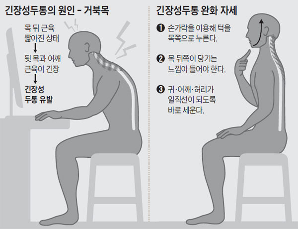

유재욱재활의학과의원 원장은 “내가 만난 사람 100명 가운데 98명은 새우등과 거북목이었다. 구부정한 자세는 근육이 해야 할 일을 척추뼈와 인대가 고스란히 부담한다는 점을 잊지 말아야 한다. 거북목으로 목의 움직임은 30%가량 줄고, 목 디스크에 걸리는 압력이 높게는 90%까지 증가한다.
페이지 당 하나의 h1만 사용하세요. 여러 개를 써도 오류는 나지 않겠지만, 단일 h1이 모범 사례로 꼽힙니다. 논리적으로 생각했을 때도, h1은 가장 중요한 제목이므로 전체 페이지의 목적을 설명해야 할 것입니다. 두 개의 제목을 가진 책이나, 여러 개의 이름을 가진 영화는 볼 수 없죠! 또한 스크린 리더 사용자와 SEO에도 더 적합합니다.